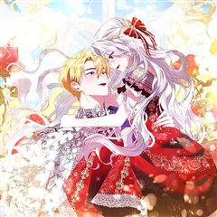
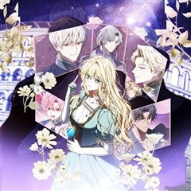
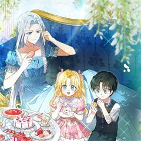
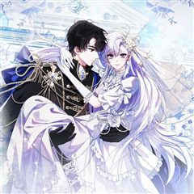

점괘보는 공녀님 같은 웹툰 추천

점괘보는 공녀님 · 슈퍼코믹스스튜디오 / 사이딘
점괘보는 공녀님 재밌게 봤다면 이 웹툰들도 좋아할 거예요. 같은 장르이면서 환생, 미스터리, 로판 같은 요소가 겹치는 작품을, 겹치는 요소가 많은 순서로 20개 골랐어요.
2026-10-04 기준 · 네이버웹툰·카카오웹툰·레진코믹스 · 성인 작품 제외
내 취향으로 직접 골라 추천받기 →-
1

카카오웹툰악녀 언니가 재력을 숨김
여주인공을 질투해 패악을 부리다 몰락하는 악녀 언니가 되었다. 하지만 이곳이 소설 속 세계라는 걸 안 건 이미 악행을 저지른 이후. ‘이 사람들에게 구차하게 매달릴 가치가 있나?’ 나에게만 이해와 동정을 바라는 아버지도, 사생아인 여동생만 싸고도는…
환생미스터리로판로맨스카카오웹툰에서 보기 → -
2카카오웹툰
육아물 여주인공의 새언니
육아물 악역 조연으로 환생했다. 귀여운 여주인공의 큰오빠에게 집착하고 매달리다 결국 여주인공에게 독을 먹이고 파멸하는 그런 찌끄레기 황녀로. 너네는 이제 내 쪽에서 사절이야! 그렇게 다짐하고 튈 준비를 했는데. 여주인공을 구해 버린 뒤 일이 제대로…
환생미스터리로판로맨스카카오웹툰에서 보기 → -
3

카카오웹툰당신의 기사에게 투표하세요!
대한민국 최고의 아이돌 서바이벌 PD인 내가, 눈을 떠보니 혁명으로 폭군을 몰아낸 새 황제의 외동딸, 황녀 ‘에디트’로 환생해 있었다. 전생의 지식을 활용한 연금술로 겨우 폭군을 끌어내리는 데 성공했건만, 돌아온 것은 이미 바닥을 쳐버린 황실에 대한…
환생미스터리로판로맨스카카오웹툰에서 보기 → -
4
 카카오웹툰
카카오웹툰사랑받는 막내는 처음이라
세계의 멸망을 막을 유일한 희망으로서 모두에게 희생을 강요받는 삶만 99번째. 제발 이번이 끝이길 바랐는데…! "아가씨가 태어나셨어요!" 기어코 100번째 삶을 시작하고 말았다. 어차피 또 영웅 취급하며 희생시키겠지. 그렇게 생각했는데, "무사히 태…
환생로판로맨스카카오웹툰에서 보기 → · 사랑받는 막내는 처음이라 같은 웹툰 → -
5
 카카오웹툰
카카오웹툰아빠가 힘을 숨김
Q. 믿었던 아빠가 엑스트라가 아닐 때의 심정을 서술하시오. A. 뭐, 뭐야…. 내 ‘지나가던 제국민 1’ 역할 돌려줘요…. 1년 365일 전쟁 중! 하루라도 바람 잘 날 없는 미친 세계관! 이곳에서 엑스트라로 태어났다는 건 축복이었다. “공주~ 일…
환생로판로맨스카카오웹툰에서 보기 → · 아빠가 힘을 숨김 같은 웹툰 → -
6
 카카오웹툰
카카오웹툰튜린의 릴리엔
원작 남주인공의 트라우마를 담당하는 나쁜 엄마가 되긴 싫었다. 평안한 인생 설계를 위해서 오빠와의 관계도 잘 다져놓고 남편이 흑화하지 않도록 충실히 의무를 다하기로 했을 뿐인데.... 남편이 갑자기 달콤하게 굴기 시작했다.
환생로판로맨스카카오웹툰에서 보기 → -
7
 카카오웹툰
카카오웹툰쉬고 싶은 레이디
왕, 마법사, 악사, 검사, 부호, 거지, 성녀, 마녀... 수없이 전생을 거듭하며 그녀는 천년을 살았다. 때론 세상에서 가장 존귀한 자로, 때론 가장 비천한 자로. 그중에서도 53번째 삶은 손꼽힐 정도로 처참하고 괴로웠다. 그리고 다시 시작된 54…
환생로판로맨스카카오웹툰에서 보기 → -
8
 카카오웹툰
카카오웹툰힘을 숨기고 즐기는 평화로운 하녀 생활
영웅 안데르트. 스스로를 희생해 대전쟁을 끝마친 위대한 검사. 희대의 영웅 중 한 명. ...이지만 실상은 죽은 남동생의 신분을 사용한 남장 여자. 그게 바로 나였다. 그런데. "어?" 죽은 후 4년이 지나서 되살아났다? 가진 것이라고는 몸뚱아리뿐이…
환생로판로맨스카카오웹툰에서 보기 → -
9
 카카오웹툰
카카오웹툰집 잘못 찾아오셨어요, 악역님
아무래도 나는 이웃집의 사연 많은 엑스트라인 모양이다. 원작의 전개대로라면 이제 여주인공이 치명상을 입고 쓰러진 악역을 구해주고 그 대가로 미남 악역의 광적인 집착을 받아야 했다. 그런데 어째서인지 악역 서브남이 내 집 앞에 기절해 있는 것이 아닌가…
환생로판로맨스카카오웹툰에서 보기 → -
10카카오웹툰
아기 용태자비는 미친놈들을 길들인다
바다 속 제국 아틀란티즈의 황제, 타랏사. 풍요롭고 행복한 날들이 이어질 거라는 믿음과 달리 그녀는 연인과 친구에게 배신당해 1000년의 기간동안 봉인당했다. 그리고 다시 눈을 떴을 땐… '위대한 제국의 황제였던 내가, 새끼 꽃게만큼이나 작은 아기가…
환생로판로맨스카카오웹툰에서 보기 → -
11카카오웹툰
충직한 검이 되려 했는데
아픈 동생의 약값을 벌기 위해 용병이 되었고, 검을 손에서 뗀 적이 없었다. 그러던 어느 날, 넘어져서 전생을 기억해 버렸으니. 이곳은 사실 동생이 주인공인 역하렘 소설 속이고, 나는 피에 미친 악마, 크리시스 공작의 딸이었다는 것. 크리시스 공작과…
환생로판로맨스카카오웹툰에서 보기 → -
12카카오웹툰
임신한 척했는데 남편이 돌아왔다
아버지의 죽음으로 하루아침에 빚쟁이 남작이 되어버린 유디트. 자신이 전생에 읽었던 소설 속에서 환생했다는 걸 깨달았다. 소설의 전개를 이용해 빚을 갚아 나가기로 한 유디트는 실종된 아들의 가짜 아내가 필요한 공작저에 계약직 며느리로 들어간다. 빚도…
환생로판로맨스카카오웹툰에서 보기 → -
13
 카카오웹툰
카카오웹툰악당들에게 키워지는 중입니다
즐겨보던 로판 소설의 엑스트라 소녀로 빙의한 지 1년 만에 내가 곧 쫓겨날 신세라는 걸 알게 됐다. 차라리 내 발로 집을 나가겠다고 했더니, “사실은 이 아이가 내 따님입니다. 그렇지, 따님?” 사이코패스 망나니 공자의 눈에 들어 버렸다? ‘놀이 후…
미스터리로판로맨스카카오웹툰에서 보기 → · 악당들에게 키워지는 중입니다 같은 웹툰 → -
14
 카카오웹툰
카카오웹툰내가 버린 개에게 물렸을 때
윈터 공작가에선 개를 기른다. 주인에게 늘 순종하는 검은 개를.. 윈터가의 공녀, 이블린 윈터. 자신만을 따르던 개, 길라스 블랙을 잔인하게 내쫓는다. “저를 사랑하신다고 하시지 않았습니까.” “사랑? 그 말을 믿었어? 버러지 같은 게 주제도 모르고…
미스터리로판로맨스카카오웹툰에서 보기 → · 내가 버린 개에게 물렸을 때 같은 웹툰 → -
15

카카오웹툰원수였던 언니가 나를 아낀다
미모는 기본에 고귀한 혈통과 천재적인 재능까지. 모든 것을 갖춘 언니의 경쟁자로 태어난 내가 그녀의 손에 죽는 것은 당연했다. 한번 도망쳤더니 제국의 절반이 잿더미가 되기에 그냥 포기하고 죽었는데. 슥- 그녀의 차가운 검날이 목에 닿은 순간, 나는…
환생로판로맨스카카오웹툰에서 보기 → -
16카카오웹툰
당신이 사랑하는 동안에
아슬란의 아내로 지냈던 3년. 그에게 어울리는 여자가 되려고 무던히 노력했으나, 그의 마음을 얻을 수 없었다. 소설 속 여자 주인공이 나타나자마자 버려질 정도로, 나는 그에게 아무것도 아닌 존재였다. 주인공은 주인공, 엑스트라는 엑스트라. 아무리 애…
환생로판로맨스카카오웹툰에서 보기 → -
17
 카카오웹툰
카카오웹툰입양딸 역할을 지나치게 잘해버렸다
책 속에 처음 들어왔을 때 나는 그냥 살아남는 것이 목표였다. 최대한 가늘고! 길고! 행복하게! 그래서 아등바등 최선을 다해 살았다. 슬슬 독립해서 꽃길을 걸어보려 했는데. “어딜 가더라도 주인님 옆자리는 내 거예요. 평생 내 머리 쓰다듬어주기로 약…
미스터리로판로맨스카카오웹툰에서 보기 → -
18
 카카오웹툰
카카오웹툰막내 공녀의 총애를 독차지했더니, 모두 내게 집착한다
정보 길드의 일급 요원으로 임무를 수행하던 중 검에 가슴이 꿰뚫렸다. 영락없이 죽었다고 생각했는데……. 8살, 지옥 같던 보육원 시절로 돌아왔다?! “안농, 난 다나야!” 마침, 내 앞에 나타난 엘라드 공작가의 막내 공녀 다이애나. 지난 생의 후회를…
미스터리로판로맨스카카오웹툰에서 보기 → -
19
 카카오웹툰
카카오웹툰K-유교 어린이가 악당 가족을 구함
어느날 과식으로 앓아누웠다가 눈을 떴을 뿐인데. 정의로운 K-어린이(태권도 품띠)였던 전생을 깨달았다? ‘심지어 내가 세상을 구해야 한다고?!’ 충분히 할 수 있지! 시작은 막돼먹은 어린이들부터! “친구한테 그러케 나쁘게 말하면 안 댐니다…
환생로판로맨스카카오웹툰에서 보기 → -
20

카카오웹툰후회물 여주인데 멘탈이 너무 강함
알고 보니 내가 후회물 여주인공이었다. 심지어 지금은 후회물 남주와 가족들이 업보를 쌓는 기간이라는데! ‘와, 이렇게까지 나를 괴롭혔다고? 심한데?’ 하지만 괜찮다. 전생의 나는 온갖 서비스직 아르바이트 경력 10년 이상, 어지간한 진상은 전부 소울…
환생로판로맨스카카오웹툰에서 보기 →